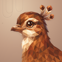
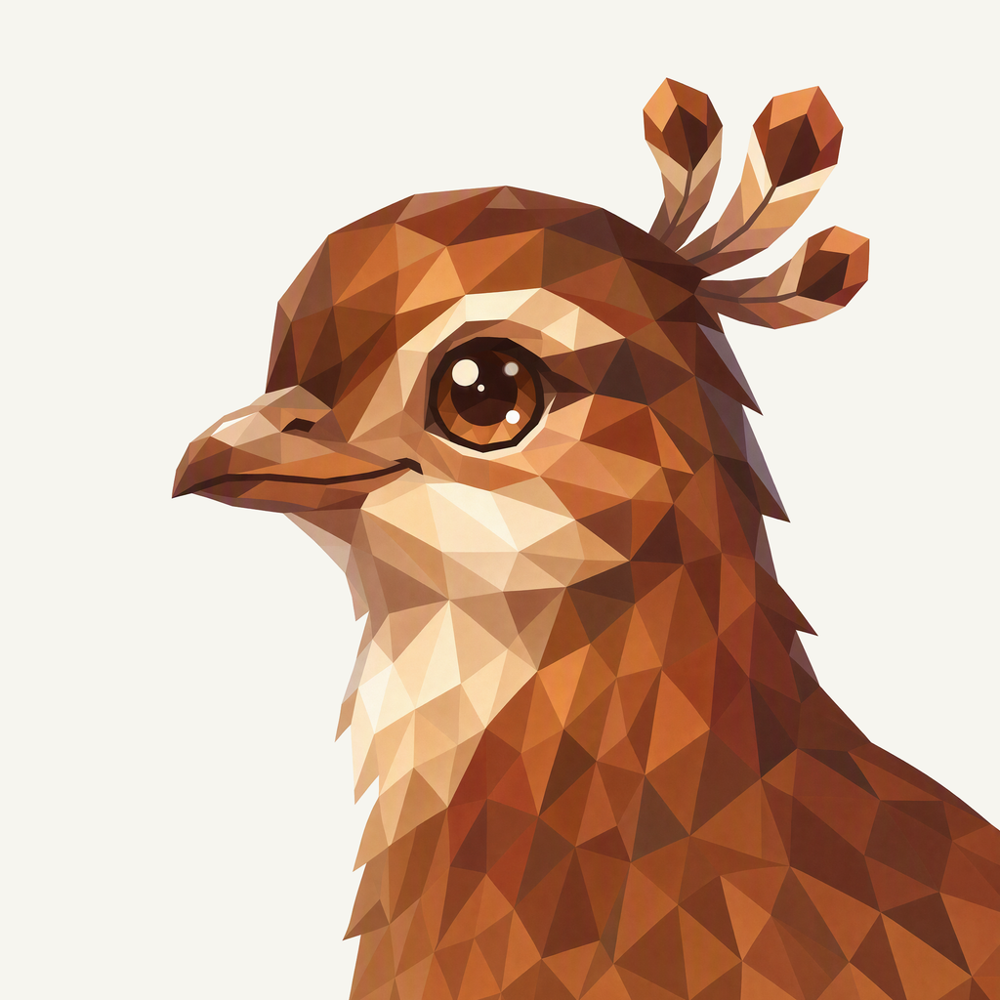
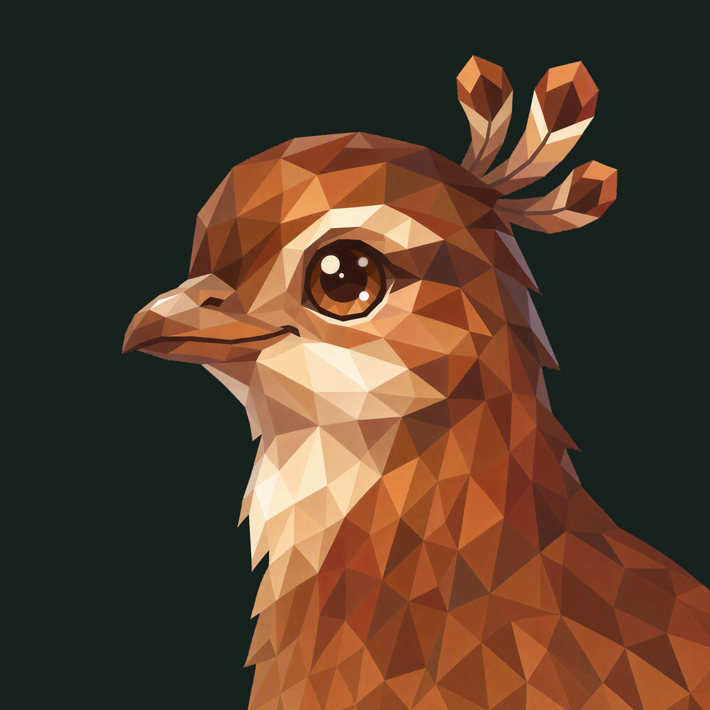

01 / Composition
Space above the crown
The left-facing portrait and three-part crown keep their familiar arrangement. A small downward placement gives the complete plume room, while the lower neck continues through the frame.
Animal family · Selected Lyre study
A chestnut profile, a three-part crown, and a little more air above the feathers.
Withdrawn before publication · finishing 02
Native 2048 × 2048
01 / Composition
The left-facing portrait and three-part crown keep their familiar arrangement. A small downward placement gives the complete plume room, while the lower neck continues through the frame.
02 / Drawing
Connected chestnut, russet, and gold planes describe the head and crown. The cream throat opens the lower face, and the warm dark eye retains the original calm expression.
03 / Presentation
Open U-shaped string impressions fall through a terracotta paper field. Fine grain and shallow shadows connect this musical rhythm to the family’s matte presentation.
The same artwork at actual display sizes.

At 32 px, the leftward beak, cream throat, and three-part crown remain distinct. At 16 px, the fine crown stems and eye highlights simplify into the warm bird silhouette.
A distinct presentation field, with colors sampled from the native lyre artwork.
Select a swatch to copy its hex value. Lyre’s existing site primary, #883720, remains a separate UI color.
One foreground, checked on two contrasting backgrounds.


Azure Foundry · gpt-image-2 · native 2048 × 2048
Loading prompt…


{kind=link}
{kind=link}
{kind=link}
{kind=link}
{kind=link}